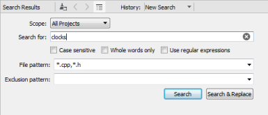
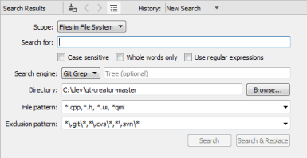
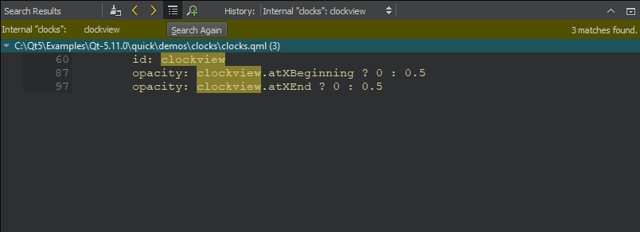

Finding and Replacing
To search through the currently open file:
- Press Ctrl+F or select Edit > Find/Replace > Find/Replace.
- Enter the text you are looking for.
If the text is found, all occurrences are highlighted as you type.
- To go to the next occurrence, click
 (Find Next), or press F3. To go to the previous occurrence click
(Find Next), or press F3. To go to the previous occurrence click  (Find Previous), or press Shift+F3.
(Find Previous), or press Shift+F3.
You can restrict the search in the Find field by selecting one or several search criteria:
- To make your search case sensitive, select Case Sensitive.
- To search only whole words, select Whole Words Only.
- To search using regular expressions, select Use Regular Expressions. Regular expressions used in Qt Creator are modeled on Perl regular expressions. For more information on using regular expressions, see the documentation for the QRegularExpression Class.
Note: If you have selected text before selecting Find/Replace, the search is conducted within the selection.
To replace occurrences of the existing text, enter the new text in the Replace with field.
- To replace the selected occurrence and move to the next one, click Find Next or press Ctrl+=.
- To replace the selected occurrence and move to the previous one, click Find Previous.
- To replace all occurrences in the file, click Replace All.
The Preserve Case when Replacing option can be selected to preserve the case of the original text when replacing. This option is not compatible with the Use Regular Expressions search option, and will thus be disabled when regular expressions are used. When the option is used, the case of the occurrence will be conserved, according to the following rules:
- All upper-case occurrences are replaced with the upper-case new text.
- All lower-case occurrences are replaced with the lower-case new text.
- Capitalized occurrences are replaced with the capitalized new text.
- Other occurrences are replaced with the new text as entered.
- If an occurrence and the new text have the same prefix or suffix, then the case of the prefix and/or suffix are preserved, and the other rules are applied on the rest of the occurrence only.
The locations of search hits, breakpoints, and bookmarks in your document are highlighted on the editor scroll bar. To turn highlighting off, select Tools > Options > Text Editor > Display > Highlight search results on the scrollbar.
Advanced Search
To search through projects, files on a file system or currently open files:
- Press Ctrl+Shift+F or select Edit > Find/Replace > Advanced Find > Open Advanced Find.
- Select the scope of your search:
- All Projects searches from all currently open projects.

- Current Project searches from the project you are currently editing.
- Files in File System recursively searches from the selected directory.

In the Search engine field, select the search engine to use:
- Select Internal to use the Qt Creator search engine.
- Select Git Grep to use Git to only search tracked files in the Git work tree. To restrict the search to the HEAD, a tag, a local or remote branch, or a commit hash, enter a reference. Leave the field empty to search through the file system.
- Select Silver Searcher to use the experimental Silver Searcher plugin. For more information, see Enabling Silver Searcher.
- Current File searches only from the current file.
- Open Documents searches from all open files.
- Clang Query Project explores the Clang abstract syntax tree (AST) using AST matcher expressions. For more information, see Exploring Clang AST.
- All Projects searches from all currently open projects.
- In the File pattern field, specify file patterns to restrict the search to files that match the pattern. For example, to search for a string only in
.cppand.hfiles, enter*.cpp,*.h. - In the Exclusion pattern field, specify file patterns to omit files from the search.
- Enter the text you are looking for and click Search.

A list of files containing the searched text is displayed in the Search Results pane.
- To see all occurrences in a file, double-click the file name in the list.
- To go to an occurrence, double-click it.
- To repeat the search after you have made changes to the listed files, for example, select Search Again.
The search results are stored in the search history from which you can select earlier searches.
To clear the search results, select the  (Clear) button.
(Clear) button.
To start a new search, select the  (New Search) button.
(New Search) button.
Note: You can use Advanced Find also to search for symbols. For more information, see Finding Symbols.
Enabling Silver Searcher
You can use Silver Searcher as a search engine in Qt Creator if you install Silver Searcher on the development PC and enable the experimental plugin.
To use Silver Searcher:
- Download and install Silver Searcher from The Silver Searcher or GitHub.
You might have to build Silver Searcher from sources for some platforms.
- Select Help > About Plugins > Utilities > SilverSearcher to enable the plugin.
- Restart Qt Creator to be able to use the plugin.
- When searching, select Silver Searcher in the Search engine field.
Exploring Clang AST
You can use the experimental Clang Refactoring plugin to explore the Clang AST using AST matcher expressions. For more information about constructing matcher expressions, see AST Matcher Reference.
To explore the AST:
- Select Help > About Plugins > C++ > ClangRefactoring to enable the plugin.
- Restart Qt Creator to be able to use the plugin.
- When searching, select Clang Query Project in the Scope field.
- Enter an AST matcher expression in the Search for field.
You can view the results of the query as links to code positions in the Search Results output pane.